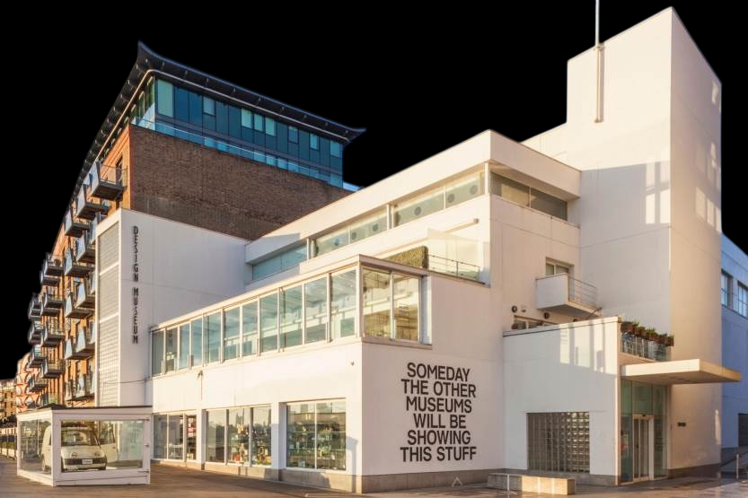
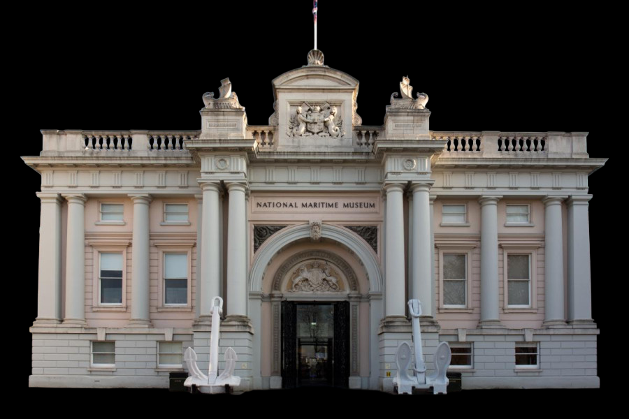
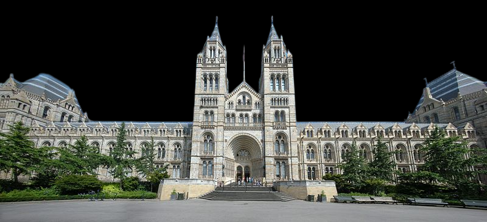
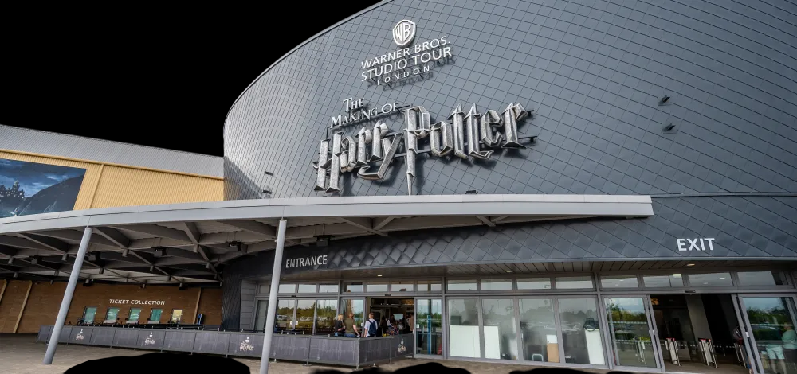

Лондон
Известные музеи Лондона
Туманное очарование Лондона манит поклонников истории, искусства и атмосферы аристократической старины. В этом городе друг с другом соприкасаются реальности различных исторических эпох.
Эпохи сменялись, и каждая из них оставляла свой след в этом великом городе, который стоит на берегах Темзы уже более двух тысяч лет. Музеи Лондона наглядно продемонстрируют туристу смену исторических эпох, познакомят с великими историческими деятелями, с бытом различных слоёв общества – и обычных горожан, и королей.
Богатства лондонских музеев и художественных галерей неисчислимы. Здесь много удивительных вещей, раритетов, диковин, собранных со всех уголков земли. Их залы наполняют произведения искусства, представляющие живопись и скульптуру всей планеты. В них хранятся сокровища Британской короны, переливаясь самыми большими бриллиантами в мире.


Музей дизайна
📍Адрес: 224-238 Kensington High St, London W8 6AG, Великобритания
👨Архитектор: Джон Поусон
🕑Год: 1989
Расположенный в самом центре Барселоны, Испания, храм Святого Семейства является одним из самых знаковых и наиболее посещаемых памятников и достопримечательностей города. Спроектированный известным каталонским архитектором Антонио Гауди, Саграда Фамилия знаменит не только уникальным сочетанием архитектурных стилей испанской готики, модерна и каталонского модернизма, но и тем, что этот грандиозный собор, возвышающийся над Барселоной, еще даже не достроен. Его строительство велось почти 150 лет, что делает его самой большой недостроенной церковью на Земле.

Музей игрушек Поллока
📍Адрес:1 Scala St, Greater London W1T 2HL, Великобритания
👨Архитектор: Hugh и Robert Adam
🕑Год: 1990
Первоначально музей разместился в мансарде на Монмут-Стрит 44 рядом с кукольным театром Поллока, что способствовало его популярности, и здесь же позднее появился магазин игрушек. Но вскоре количество экспонатов настолько возросло, что музею пришлось в 1969 году переехать в более просторное помещение на Скала-Стрит 1, где он и находится по сей день.
Как и раньше, здесь в цокольном этаже расположен магазин игрушек, где продают куклы и игрушки, сделанные под старину, а также знаменитые бумажные кукольные театры и сувениры. Остальные три этажа занимают игрушки всех времён и народов. Самая старая игрушка датируется 1300 г. до н. э., а всего здесь более 20 тысяч экспонатов, из них только кукол свыше 8 тысяч. Самое почётное место здесь, как и раньше, занимает коллекция настольных кукольных театров Поллока.

Музей Чарльза Диккенса
📍Адрес: 48-49 Doughty St, London WC1N 2LX, Великобритания
👨Архитектор: Неизвестный
🕑Год: 1809
Ещё совсем недавно этот, с виду обычный, старый дом на Даути Стрит был мало кому известен. В 1923 г. его решено было снести, однако, как оказалось, это был единственный из оставшихся домов в Лондоне, где некогда проживал великий английский писатель Чарльз Диккенс.
Существовавшему к тому времени уже более 20 лет Обществу Диккенса удалось выкупить это здание, где и был организован музей Чарльза Диккенса. О нём долгое время знали только специалисты, да студенты литературных факультетов.

Национальный морской музей
📍Адрес: Romney Rd, London SE10 9NF, Великобритания
👨Архитектор: Иниго Джонс, Айниго Джонс
🕑Год: 1937
Этот музей просто не мог не появиться в Лондоне – столице Великобритании, бывшей некогда «царицей морей». Национальный морской музей был основан по официальному указу парламента страны в 1934 г. и открыт 27 апреля 1937 г. королём Георгом VI.
Находится он в Гринвиче (район Лондона), и представляет собой комплекс исторических зданий XVII века, являющихся объектами мирового культурного наследия. К таковым относится Дом королевы и знаменитая Гринвичская обсерватория. Именно здесь проходит нулевой меридиан. Сейчас этот меридиан обозначен зелёным лучом лазера, направленным с крыши обсерватории строго на север.

Музей естественной истории (Музей естествознания)
📍Адрес: Cromwell Rd, South Kensington, London SW7 5BD, Великобритания
👨Архитектор: Альфред Уотерхаус
🕑Год: 1881
Появлению музея естественной истории, или как его иногда называют, Музея естествознания, в столице Великобритании предшествовало создание в 1759 г. Британского музея. Произошло это после того, как Хэнс Слоун – известный врач и натуралист, передал свои огромные коллекции народу Британии и парламентом было принято решение об открытии музея. Расположился он тогда в Монтегю-хаус в Блумсбери – одном из районов Лондона.
Растущее количество экспонатов всё время вынуждало расширять выставочные территории, пока в 1845 г. не было принято решение о выделении части экспозиций в отдельные музеи. И в 1880 г. в Кенсингтонском районе Лондона, было возведено нынешнее величественное здание по проекту капитана Фрэнсиса Фоука, а уже в 1881 г. музей начал работу. В 1963 г. Музей естествознания обрёл полную автономность от Британского музея.

Музей Гарри Поттера
📍Адрес: Studio Tour Dr, Leavesden, Watford WD25 7LR, Великобритания
👨Архитектор: Отсутствует
🕑Год: 2012
Мир волшебства и сказки – так можно назвать этот уникальный музей. Да, собственно, это и не музей вовсе, а красочное шоу, путешествие в сказку, в волшебный мир Гарри Поттера.
А возможным всё это волшебство сделал создатель, так полюбившейся всем саги о Гарри Поттере, концерн Warner Bros., переоборудовав одну из своих студий Leavesden Studios, что расположена в 30 км от Лондона в местечке Уотфорд.
Главный экспонат музея – школа магии Хогвартс, вернее 16-метровый макет сказочного замка, где она находилась. Но и этих размеров достаточно, чтоб почувствовать себя в волшебной стране, тем более, его оживили горящими на башнях факелами, а чарующая подсветка и визуальные эффекты создают иллюзию смены дня и ночи каждые 4 минуты.

Музей Шерлока Холмса
📍Адрес: 221b Baker St, London NW1 6XE, Великобритания
👨Архитектор: Отсутствует
🕑Год: 1990
Этот адрес на слуху не только у поклонников английского писателя, мэтра писательского дела и продолжателя заложенных Эдгаром Алланом по традиции литературного детективного жанра, Артура Конан-Дойля, но и у практически всех, интерактивно, либо же путешествуя, знакомящихся с лондонскими достопримечательностями.
Несомненно, самый известный «ребенок» сэра Артура, это щелкающий с книжных страниц, словно семечки, тяжелейшие уголовные дела, проницательный Шерлок Холмс, равно как и самый известный частный музей Британской столицы – музей сыщика Шерлока Холмса.